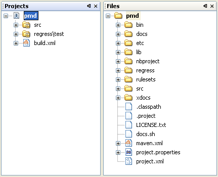
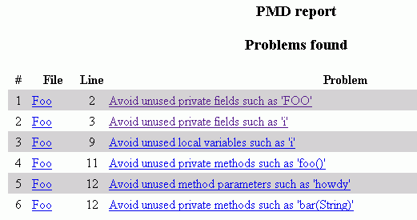
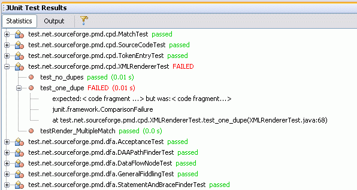
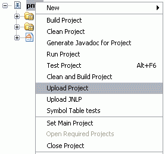

Note. This document is for reference purposes only. The version of the PMD project that is used in this document is no longer available and some of the UI of the IDE that is described has changed. However, many of the principles and steps for importing a project are still applicable in the current version of the IDE.
This document shows you how to import a real 3rd party project built with the Ant tool into NetBeans IDE as a free-form project. The project that has been selected to demonstrate free-form project functionality is the PMD tool. This tutorial will show not only how to import the project but also how to change the build script to better utilize what NetBeans project infrastructure can offer. This tutorial uses information available in Advanced Free-Form Project Configuration and if you are familiar with this document it will be easier for you to finish the tutorial.
This tutorial assumes you have some basic knowledge of Ant and XML, and that you know basics about how projects in NetBeans IDE work.
Before you begin, you need to install the following software on your computer:
The following topics are covered in this document:
PMD is a handy tool for programmers that detects potential problems in Java source code. You can download PMD from pmd.sourceforge.net as a Zip source distribution or check it out from anonymous CVS. This tutorial assumes that you are using zipped sources distribution of PMD 3.5. If you want to use sources checked out from PMD source repository then follow instructions on sourceforge.net to get the PMD sources.
It's really easy using CVS support in NetBeans 5.0. Described instructions can be used for 3.5 sources and for trunk sources as well. This tutorial uses the 3.5 version because there were compilation errors and execution errors in trunk sources at the time the tutorial was written.
The goal of this exercise is to perform the initial import of the project's build script to the IDE and set up all required settings for basic IDE operations.
Now that you have created the project, let's examine it.

The project node contains both source roots and also the build script. The names of the nodes are a little strange - src and regress/test. We should change them to something nicer. Open Project Properties from project's contextual menu. You will see two tables with source roots location and labels. You can change the label to whatever you want. Double click the label and change src to Source Packages and regress/test to Test Packages.
To set the classpath correctly we will need to look what is in the build script - by basic observation we find out that compilation is done with following classpath definition:
<property name="dir.lib" value="lib\"/>
...
<path id="dependencies.path">
<pathelement location="${dir.build}"/>
<fileset dir="${dir.lib}">
<include name="jaxen-1.1-beta-7.jar" />
<include name="jakarta-oro-2.0.8.jar" />
<include name="xercesImpl-2.6.2.jar" />
<include name="xmlParserAPIs-2.6.2.jar" />
</fileset>
</path>
The same classpath is used for compilation of tests, because everything is compiled together.
The classpath set up in this step is used for IDE features such as code completion and by no means affects the classpath used for compilation of the project.
When examining the project build script you will actually realize that some targets that you mapped to IDE actions when creating the project are not correct. The Build action target is not compile but in fact jar. The Clean action should not be mapped to the clean target but delete. And the Run Project target is in fact called pmd. This can be easily fixed:
| Action | Target |
| Build Project | jar |
| Clean Project | delete |
| Run Project | pmd |
Now you should be able to run all project actions. Well, except Run Project. The pmd target contains a taskdef without an explicit classpath attribute, meaning that it counts on having the correct JAR file on the classpath implicitly. How do we fix this? One way is by adding classpathref="dependencies.path" attribute to taskdef for the pmd task, so the taskdef will look like this:
<taskdef name="pmd" classname="net.sourceforge.pmd.ant.PMDTask" classpathref="dependencies.path"/>
Another method is to add pmd-3.5.jar to the additional classpath entries for Ant. Choose Tools > Options, then select Miscellaneous > Ant, click the Manage Classpath button, and add pmd/lib/pmd-3.5.jar. The JAR file is only available after the project is built, of course.
The better method is to use explicit classpath when defining the task, because then the build script is more portable. And in this particular case it's also better because if you add pmd-3.5.jar to Ant classpath on Windows then it's not possible to run Clean Project since the JAR file is be locked by the OS.
But there is still one minor problem with Run Project action. The build script points to the absolute location of some not existing source file in the bin folder. A simple fix is to replace the absolute path in pmd task with bin. The fileset inside the pmd task then should look like this:
<fileset dir="bin">
<include name="Foo.java"/>
</fileset>
And you also need to create missing class in pmd/bin folder:
public class Foo {
private static int FOO = 2; // Unused
private int i = 5; // Unused
private int j = 6;
public int addOne() {
return j++;
}
public void doSomething() {
int i = 5; // Unused
}
private void foo() {} // unused
private void bar(String howdy) {
// howdy is not used
}
}
Note: The Foo class is based on comments in rulesets/unusedcode.xml.
Usually, it's useful to make the run target depend on the build target. It's not the case in PMD's build script, so if you want run target to be executable even when project is not built, add depends="jar" to the pmd target definition.
Now you can finally run the project and you will get the pmd-3.5/rpt.html file in the project folder showing problematic parts of the Foo class:

Now your project is set up and you can execute all basic project related actions: Build Project, Clean Project, Generate Javadoc for Project, Run Project, Test Project and Clean and Build Project.
Having correctly set up project outputs is a very important part of free-form project configuration. It's important for debugging tasks, for fast background classpath scanning, and for using project products as libraries for other projects.
Each source root should have its own build product(s), either a folder or JAR file. From observation of the compile and jar targets in the PMD build script you can find out that the Source Packages are built into the build folder along with test classes and the final JAR file is lib/pmd-3.5.jar. In order to view Javadoc in projects that depends on the PMD free-form project you also need to set the Javadoc output. PMD build script produces Javadoc documentation into folder docs/apidocs - according to the javadoc target.
Now the project is set up and ready to be used in IDE. In following chapters I will show how to get even more from the IDE.
Each good project should have tests and the PMD project has a number of tests that can be executed with the Test Project command. But if you run this command you will see that output doesn't look as nice as it looks when running standard NetBeans projects.
This can be fixed too. First, you need to modify target names to comply with simple convention - the name must start with test, which can be followed by a dash or period and then anything you want (e.g. test-server or test.server). Alternatively, you can name the target run-tests. The other thing is that JUnit tasks use various formatters to print various types of output and the NetBeans JUnit module requires a particular combination of formatters to show nice output. The JUnit tasks in PMD build script use the following formatter:
<formatter type="plain"/>but if you want to have nice output, you have to replace the previous formatter with the following two in all JUnit tasks:
<formatter type="xml"/> <formatter type="brief" usefile="false"/>
And you will get very nice display of JUnit test execution that updates itself when tests are running, as in the following image:

3rd party projects have also special targets that are project-specific and there can be no mapping to standard IDE commands. But that's not a problem for a free-form project - you can map any target to a command which is then available in project context menu.
The PMD project contains a couple of such targets that might be candidates for adding them to the context menu, for example targets for uploading build products to a web server or targets for running partial test suites.
The context menu for the PMD free-form project then might look like this:

Note: Upload actions are just an example, they require external executable files and appropriate write access.
When developing a larger project you might want to be able to run compilation only for a selected file or group of files, execute a single file, or debug a project or even a single file. All this is possible, although it requires some Ant knowledge. The PMD project is not a good example to show all of the commands that I just mentioned but I can show how to set up at least some of them.
There is support in the IDE for generating additional build scripts the for Compile File action and for the Debug Project action. All details about setting up NetBeans-specific actions are in the document Advanced Free-Form Project Configuration.
The target in the generated build script is called when you invoke the Compile File command on one or more files from a single source root folder. If you have already correctly setup everything the script does not require any modifications. Just to check - the compilation target should look like this:
<target name="compile-selected-files-in-src">
<fail unless="files">Must set property 'files'</fail>
<mkdir dir="build"/>
<javac destdir="build" includes="${files}" source="1.5" srcdir="src">
<classpath path="lib/jakarta-oro-2.0.8.jar;lib/jaxen-1.1-beta-7.jar;lib/xercesImpl-2.6.2.jar;lib/xmlParserAPIs-2.6.2.jar"/>
</javac>
</target>
The destination build directory must be created in case the target is called after a clean. The source dir must point to the src folder, the includes attribute of the javac task must contain the property ${files}, and the classpath must be the same as the classpath for compilation in main build script.
The other file that has been modified and is opened in the editor is project.xml. It contains the actual mapping of the Compile File action to the appropriate Ant target.
There is no support for generating an Ant target for the Run File command. It must be created by hand.
<action name="run.single">
<script>nbproject/ide-file-targets.xml</script>
<target>run-selected-file</target>
<context>
<property>runclass</property>
<folder>src</folder>
<pattern>\.java$</pattern>
<format>java-name</format>
<arity>
<one-file-only/>
</arity>
</context>
</action>
<target name="run-selected-file" depends="jar">
<fail unless="runclass">Must set property 'runclass'</fail>
<java classname="${runclass}" classpathref="dependencies.path" fork="true"/>
</target>
<import file="../${ant.script}"/>
The import is required because the Run single file target must depend on
the jar target from the main build script. Save both files. The Run File command is now enabled on any file under the Source Packages folder. Of course, it makes sense to run this command only on classes with a main method.
The Debug Project command is normally pre-generated when invoked for first time, but it requires a correctly configured run target in the main script using the java task. This is not the case in the PMD project. Hence, we have to create a Debug File action that is enabled on single files and not on the project itself.
<action name="debug.single">
<script>nbproject/ide-file-targets.xml</script>
<target>debug-selected-file</target>
<context>
<property>debugclass</property>
<folder>src</folder>
<pattern>\.java$</pattern>
<format>java-name</format>
<arity>
<one-file-only/>
</arity>
</context>
</action>
<target name="debug-selected-file" depends="jar" if="netbeans.home">
<fail unless="debugclass">Must set property 'debugclass'</fail>
<nbjpdastart name="debugclass" addressproperty="jpda.address" transport="dt_socket">
<classpath refid="dependencies.path"/>
</nbjpdastart>
<java classname="${debugclass}" fork="true">
<jvmarg value="-Xdebug"/>
<jvmarg value="-Xrunjdwp:transport=dt_socket,address=${jpda.address}"/>
<classpath refid="dependencies.path"/>
</java>
</target>
Save both files. The Debug File command is also enabled on all files under the Source Packages folder and it makes sense to invoke it only on executable classes.
The PMD project is now fully integrated in IDE and the user can utilize almost all actions that are available for NetBeans native projects.
There are some general rules and good practices that, if followed, make it easier to integrate 3rd party projects into the IDE as free-form projects:
To send comments and suggestions, get support, and keep informed on the latest developments on the NetBeans IDE J2EE development features, join the nbusers@netbeans.org mailing list.